Префектура Симанэ · Ясуги · сад и живопись
Музей Адати в Ясуги: сад, который 23 года подряд называют лучшим в Японии, и картины Тайкана Ёкоямы
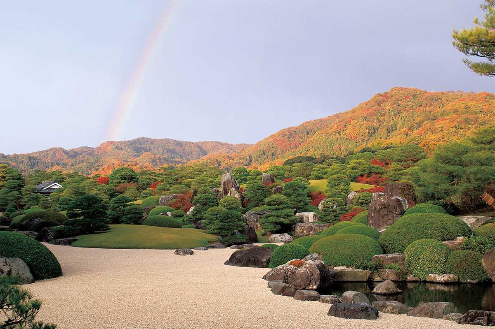
В тихой глубинке префектуры Симанэ, в городе Ясуги, стоит художественный музей с необыкновенным садом. Его сад американские специалисты год за годом ставят на первое место в Японии, а в залах хранится одна из лучших коллекций японской живописи XX века.
Рейтинг
Первое место с 2003 года
Американский журнал о японских садах «Сукия Ливинг Мэгэзин: Джорнал оф Джапанис Гарденинг» каждый год составляет рейтинг садов Японии. Целый год специалисты изучают около тысячи садов по всей стране, а затем комиссия примерно из 30 исследователей и садовых мастеров из разных стран выбирает лучшие. Оценивают качество самого сада, то, как он сочетается со зданиями, и то, как здесь принимают гостей. В итоговый список каждый год попадают 50 садов.
С первого выпуска рейтинга в 2003 году первое место неизменно достаётся саду музея Адати. В 2021 году эта серия дошла до 18 лет, а по данным самого музея на 2026 год таких лет подряд уже 23. Сад высоко ценят и в Европе: французский «Зелёный гид Мишлен» по Японии дал ему высшую оценку, три звезды.
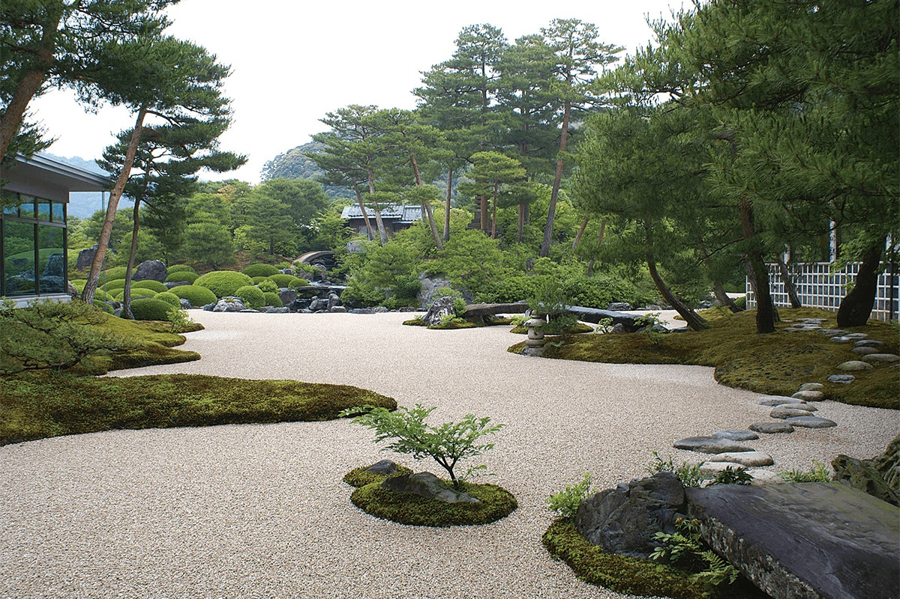
Сам музей отвечал на награду так: сад и дальше должен каждый раз удивлять гостей заново, чтобы им было спокойно и радостно любоваться «знаменитым садом и знаменитыми картинами».
Основатель
Человек, который считал сад картиной
Дзэнко Адати родился в 1899 году в Фурукаве, той самой деревне под Ясуги, где теперь стоит музей. Сразу после начальной школы он стал помогать родителям на поле. Глядя, как они работают не разгибая спины и почти ничего за это не получают, мальчик решил, что пойдёт в торговлю.
Путь был извилистым: Адати открывал одно дело за другим, а после войны торговал тканями в Осаке и занимался недвижимостью. Деньги он тратил на то, что любил с детства, на японскую живопись нихонга, написанную традиционными минеральными красками на шёлке и бумаге. Больше всего его восхищал Тайкан Ёкояма: «Тайкан моя любовь на всю жизнь», говорил коллекционер и собрал его работы от ранних до самых поздних. Но одним художником он не ограничивался и покупал картины многих крупных мастеров нихонга, так что со временем его стали знать как известного собирателя. С молодости он ещё и обожал устраивать сады, и эта страсть с годами только росла.
В 1970 году, в 71 год, Адати основал фонд и музей у себя на родине. Так он хотел отблагодарить родные места и помочь культурной жизни префектуры Симанэ.
«Сад тоже картина»
Дзэнко Адати, основатель музея
Эти слова в музее поняли буквально. Большие окна здесь служат рамами, и сад за стеклом смотрится как полотно на стене. Такие окна называют «живыми картинами в раме». А в одной из ниш токонома стена прорезана насквозь, и вместо свитка в ней висит кусочек настоящего сада: это «живой свиток».
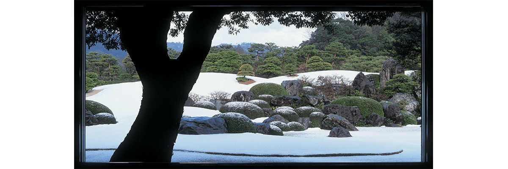
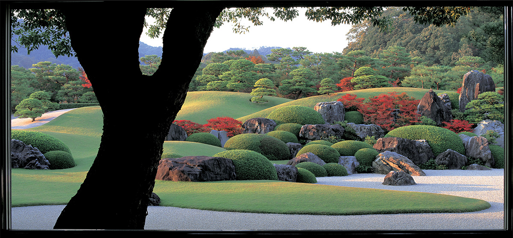
Сад
Пятнадцать лет работы и семь садовников
Сад Адати начал разбивать в 1968 году. Сначала он пригласил известного садового мастера, но представление об идеальном саде у него было своё, и он сам руководил садовниками и всё время что-то переделывал. Нынешний облик сада, который плавно переходит в окрестные горы, сложился примерно за 15 лет.
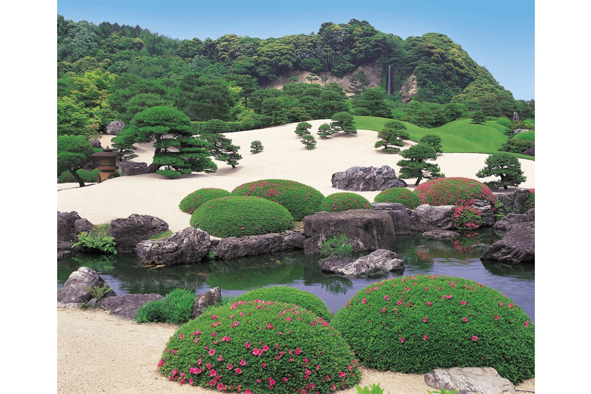
Сегодня это несколько садов сразу: сухой сад карэсансуй из камней и песка, мшистый сад, маленький внутренний сад цубонива, сад с прудом, сад «Белый песок и зелёные сосны» и водопад Кикаку. Вместе с горами, которые служат ему фоном по приёму «заимствованного пейзажа», сад занимает около 165 000 квадратных метров.
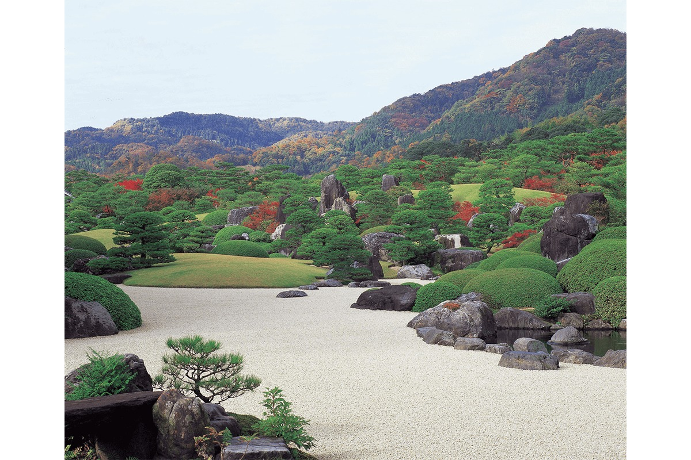
Чтобы в любое время года сад выглядел безупречно, за ним каждый день без единого выходного ухаживают семь садовников музея. А по утрам, до открытия, уборкой занимаются все сотрудники.
Каждое время года меняет сад по-своему, но ярче всего он осенью. С середины ноября до начала декабря одно за другим краснеют деревья в саду, а за ними склоны гор.
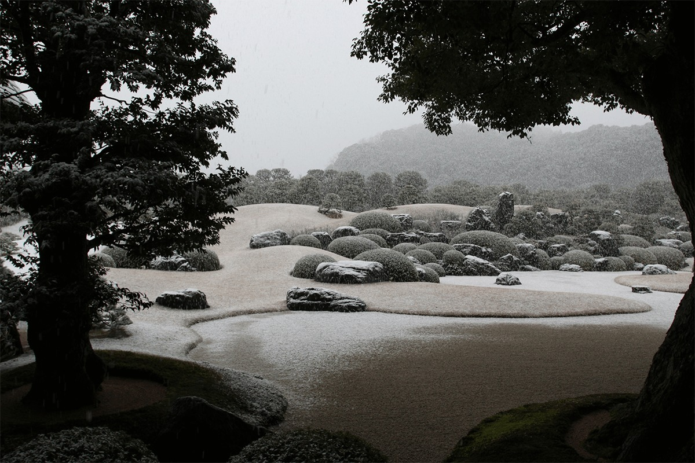
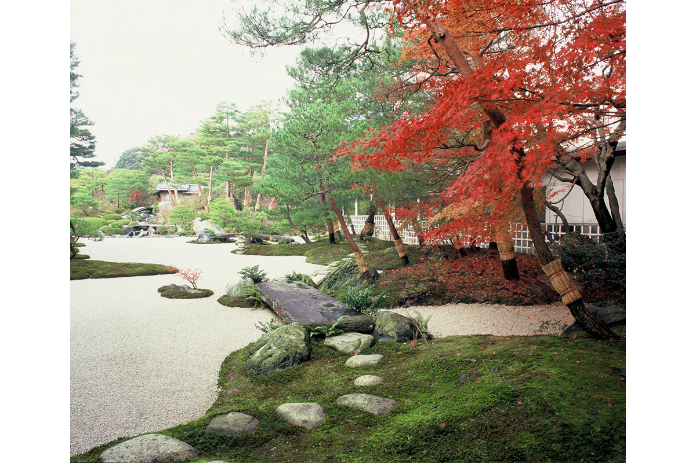
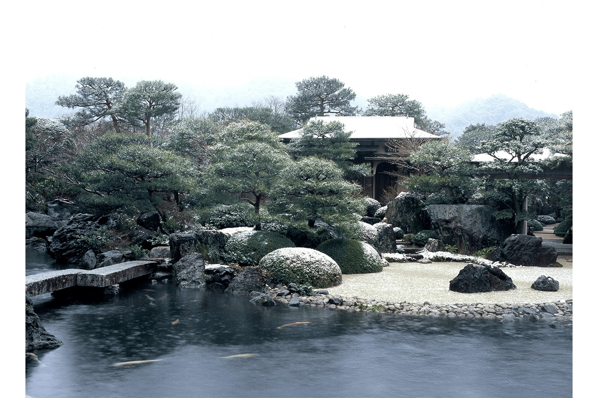
Живопись
Сначала сад, потом картины
В собрании музея около 2000 произведений: японская живопись нихонга от конца XIX века до наших дней, керамика, иллюстрации к детским книгам, лаковые изделия. Главное сокровище составляет коллекция Тайкана Ёкоямы, около 120 работ. И по числу, и по качеству ей мало равных в Японии.
Тайкан Ёкояма (1868–1958) был ведущим художником нихонга своего времени и много лет фактически возглавлял японский художественный мир. Посетители обычно задают два вопроса: откуда здесь столько работ Тайкана и как в такой глуши появился такой сад. Ответ на оба вопроса в замысле основателя. Сочетание «японского сада и японской живописи» стало главным принципом музея с первого дня. Адати считал, что сад поймёт даже тот, кто далёк от искусства: человек сначала почувствует красоту времён года в саду, а потом с этим чувством подойдёт к картинам и легче их примет.
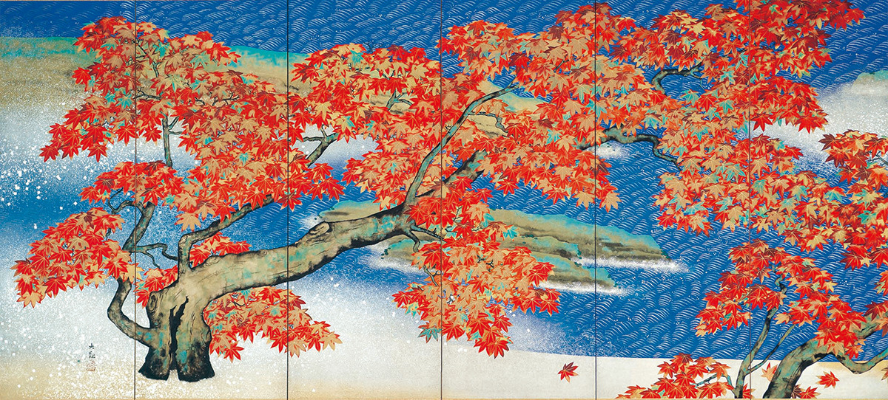
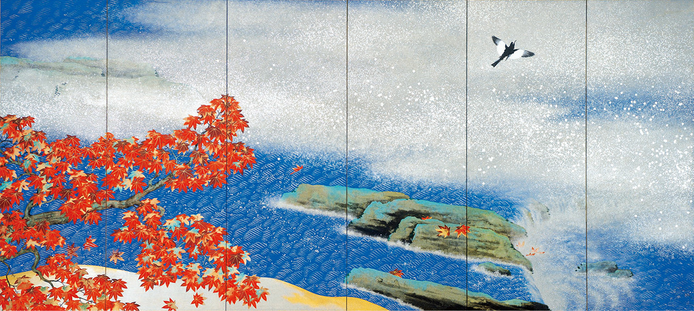
«Осенние клёны» считают самой пышной и нарядной работой Тайкана. Почти всю поверхность ширм занимает густая синяя краска, поверх неё платиновой пылью проведена рябь, и получается течение воды. По этой воде рассыпаны пылающие алые листья: так художник передал чистую и прохладную осеннюю природу. Это одна из главных работ зрелого Тайкана.
Вторая любимица публики из той же коллекции написана Рюси Кавабатой (1885–1966), ещё одним крупным мастером нихонга. Картина называется «Айдзэн»: в буддизме это слово означает любовную страсть между мужчиной и женщиной, а художник изобразил её через пару уток-мандаринок. Селезень чертит на воде широкую дугу, утка отвечает ему маленькой. Обе дуги золотые и лежат на синей воде, усыпанной алыми листьями, но так и не пересекаются, и в этом вся суть картины.
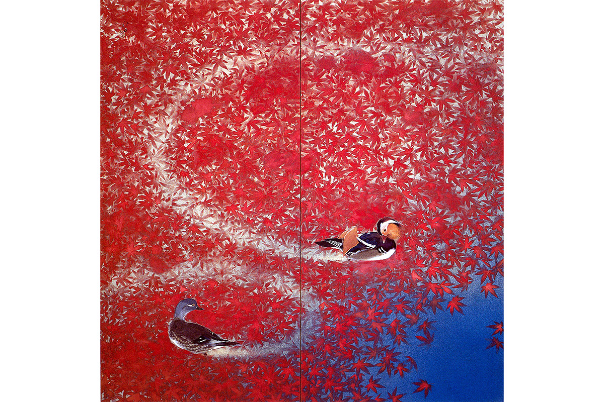
Осенью 2021 года обе картины показывали вместе на выставке «Избранные шедевры японской живописи из коллекции музея Адати», которая шла до 30 ноября.
Сад и картины смотрят за одно посещение: взрослый билет в 2021 году стоил 2300 иен.
Музей Адати
- Адрес
- префектура Симанэ, Ясуги, Фурукава-тё, 320
- Телефон
- +81 854-28-7111
- Часы работы
- апрель–сентябрь 9:00–17:30, октябрь–март 9:00–17:00; в новый корпус вход до 15 минут до закрытия
- Выходные
- без выходных; новый корпус иногда закрыт на смену экспозиции
- Цены / Вход
- взрослые 2300 иен, студенты 1800 иен, старшеклассники 1000 иен, школьники 500 иен, абонемент на 2 года 6000 иен; по субботам школьники и старшеклассники проходят бесплатно по ученическому